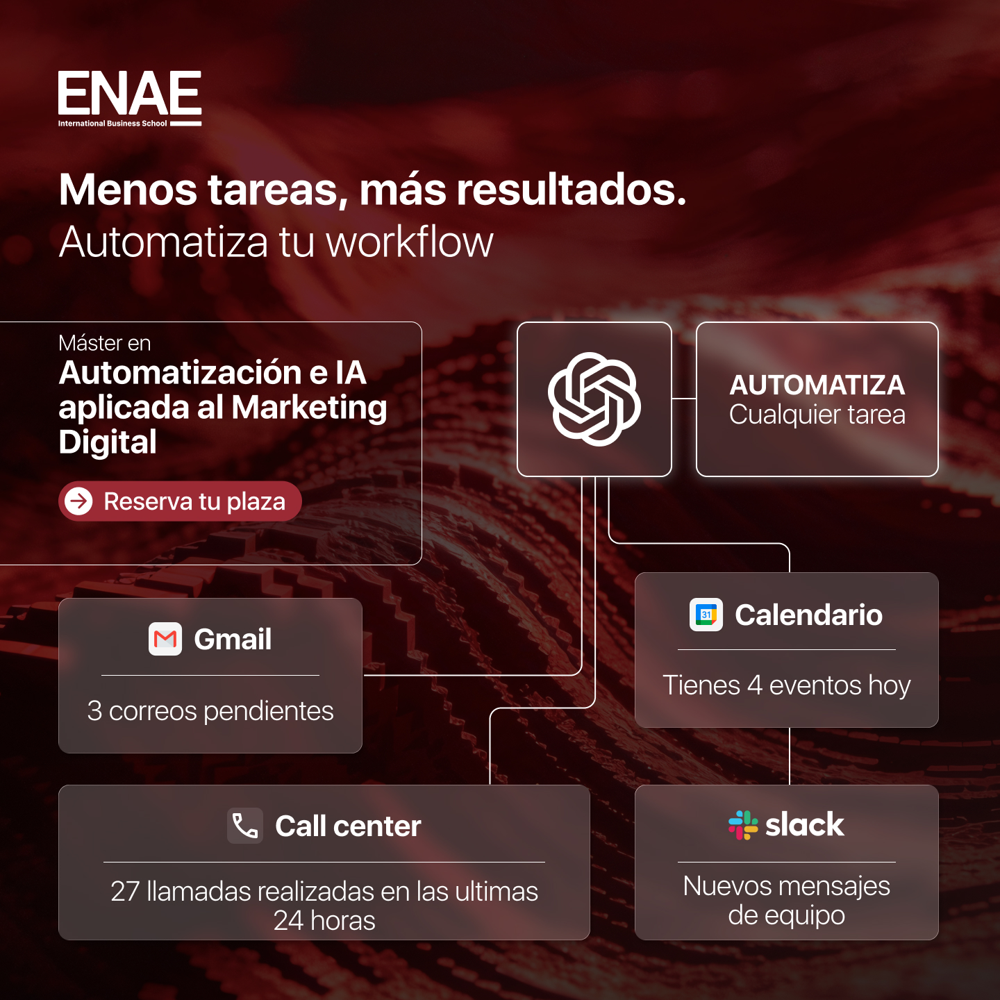
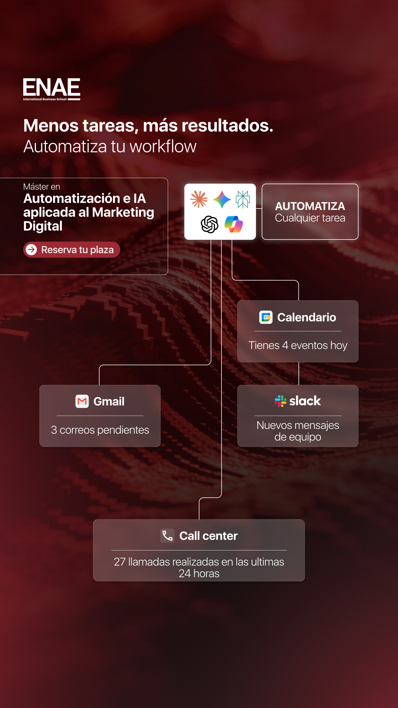
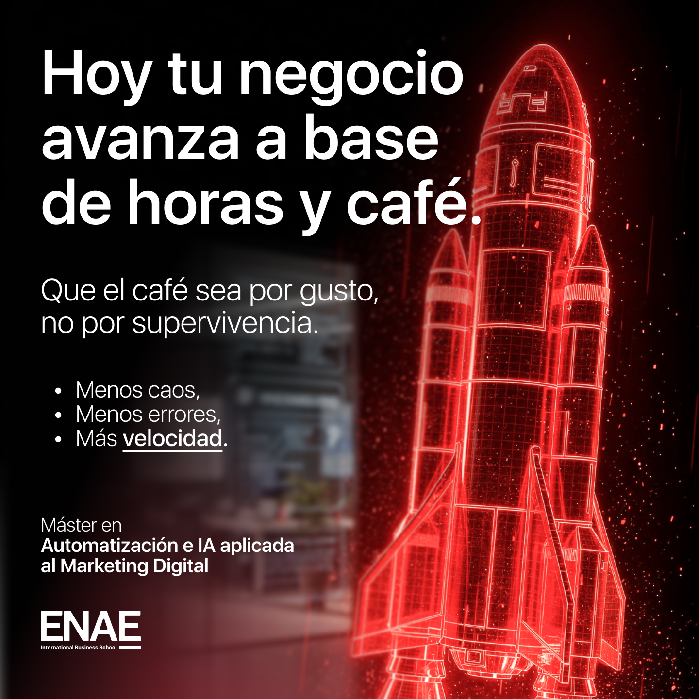
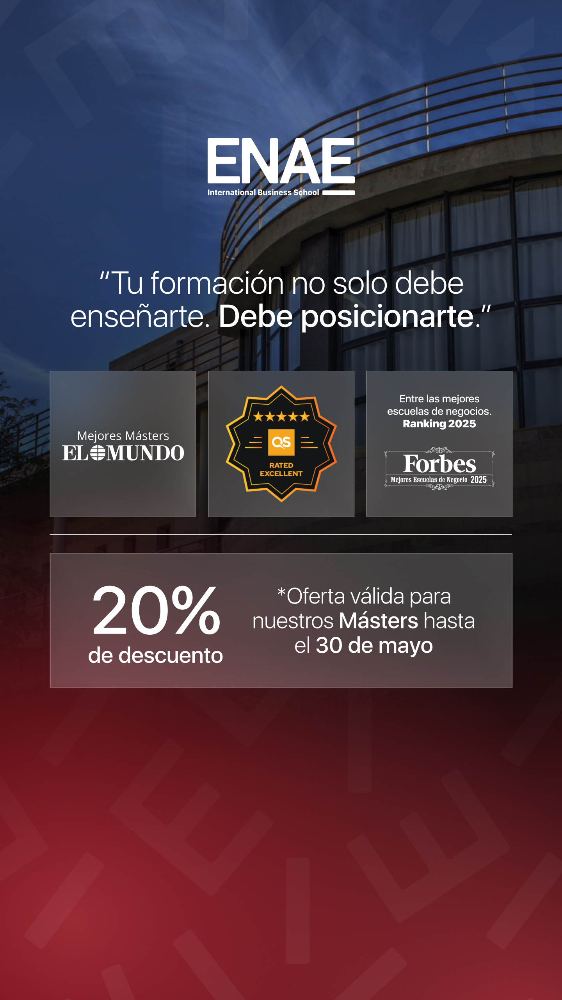
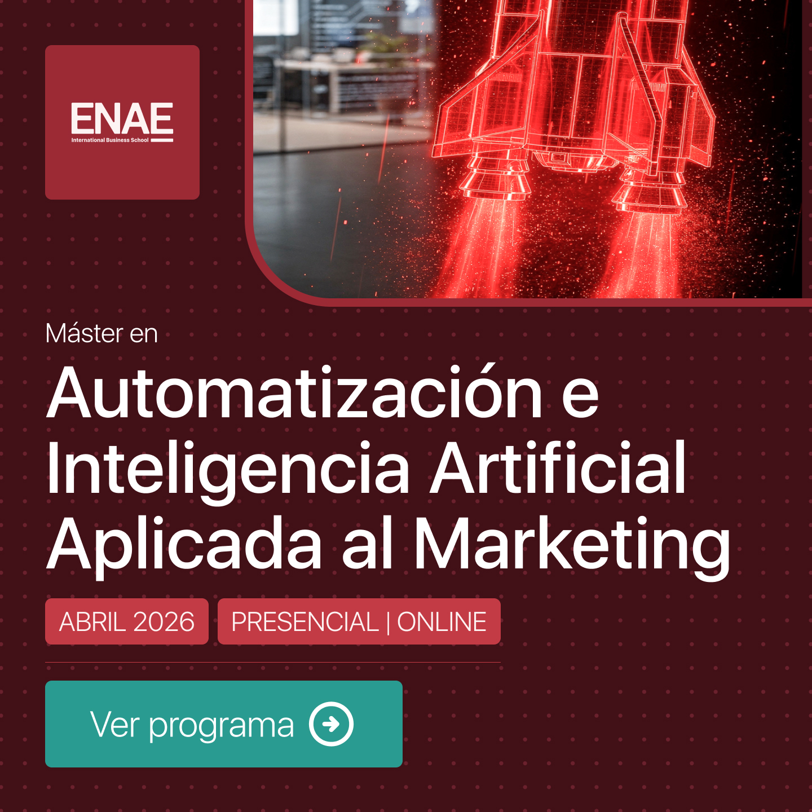
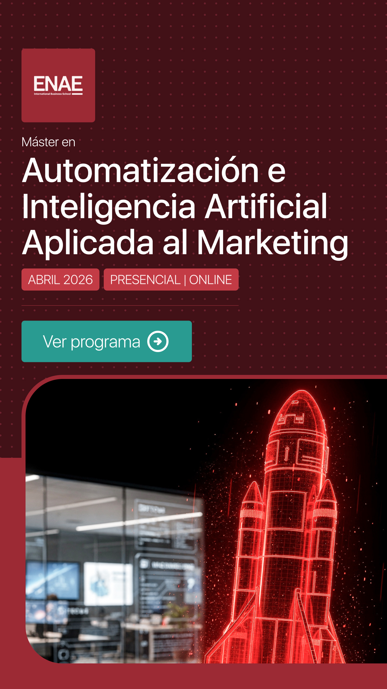
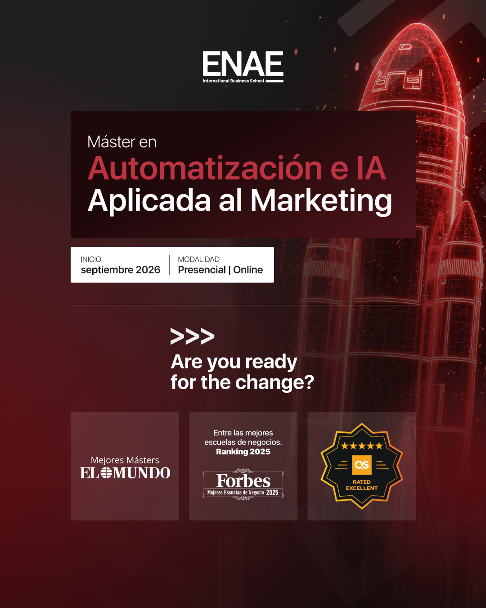
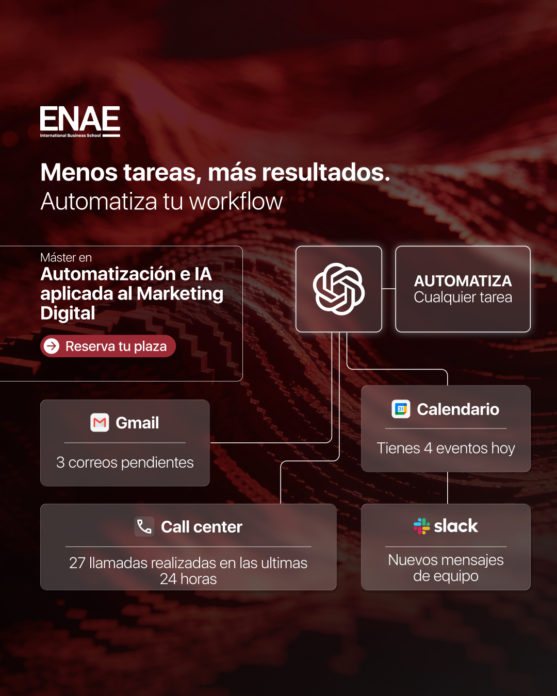
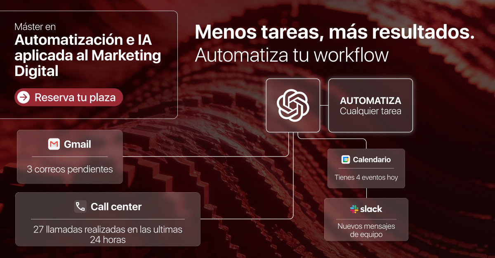

01 — Contexto
El anuncio que nadie reconocía
Una escuela de negocios con programas de máster consolidados necesitaba renovar sus creatividades publicitarias en Meta. El equipo contaba con buyer personas ya definidos y una estrategia de campaña activa gestionada por el responsable de paid media.
Mi entrada en el proyecto: traducir esos buyer personas y el briefing de cada campaña en piezas visuales y textos que conectaran con la situación real del candidato — no con un catálogo genérico del programa.
Las piezas anteriores hablaban del producto, no del candidato. Titulares como "Máster en Marketing Digital — Próxima convocatoria" comunicaban qué era el programa, pero no le decían nada a la persona que lo estaba viendo en su feed a las 9 de la noche después del trabajo.
El resultado visible en los datos: un CTR de 0,76% — por debajo del benchmark del sector para este tipo de anuncios.
0,76%
CTR inicial
Línea base antes de rediseñar las creatividades
×2,2
Incremento
Factor de mejora conseguido con el nuevo enfoque
1,69%
CTR conseguido
Durante el periodo con nuevas creatividades
02 — Investigación
Leer los buyer personas como diseñador
El equipo de marketing tenía los buyer personas documentados. Mi trabajo fue hacer el puente que normalmente no existe: leerlos como material de diseño, no como descripción demográfica.
De cada perfil extraje qué frase le hace parar el scroll, qué objeción aparece antes de que llegue al CTA y qué tono le genera confianza.
Los tres perfiles de candidato
Perfil 01
La profesional que quiere más
28–35 años
Trabaja en marketing o gestión, siente que ha tocado techo. Le frena el tiempo y el coste, no la motivación. Decide con lógica pero se activa con aspiración. Necesita ver retorno concreto antes de que llegue la objeción del precio.
Perfil 02
El recién graduado con prisa
22–26 años
Siente que su título de grado no diferencia. Quiere entrar bien posicionado al mercado laboral. Sensible al precio, busca prueba social y referencias de otros como él.
Perfil 03
El que siente que la IA le adelanta
30–42 años
Ve cómo su sector cambia y sus herramientas quedan obsoletas. No quiere volver a estudiar "por estudiar" — necesita utilidad real e inmediata. Su miedo principal: invertir tiempo y dinero en algo que no le sirva.
Pain points que el diseño tiene que desactivar
Estos son los frenos que aparecen antes del clic — y que una creatividad bien construida puede anticipar:
"No tengo tiempo para estudiar"
El mayor freno universal. La flexibilidad tiene que aparecer en el anuncio, no solo en la landing.
"No sé si me lo puedo permitir"
El coste percibido como barrera antes de ver el precio. Anclar valor antes de que llegue la objeción.
"¿Y si no es para mí?"
Duda de encaje. Los mensajes demasiado aspiracionales excluyen al candidato que no se ve reflejado.
"¿Para qué me va a servir realmente?"
Escepticismo sobre el retorno. "Mejora tu carrera" no responde esta pregunta.
03 — Estrategia creativa
Empezar desde la situación, no desde el producto
La decisión central: romper con el anuncio centrado en el programa y empezar cada pieza desde la situación del candidato. El nombre del máster aparece en segundo plano — lo primero es el reconocimiento.
Principios de UX Writing que guiaron el copy
1
Primera frase: la situación del usuario, no el producto
Si el candidato no se ve en la primera línea, no llega al CTA.
2
Evitar superlativos vacíos
"El mejor", "líder en formación" no dicen nada. La especificidad ancla más valor que cualquier adjetivo.
3
CTA como promesa
"Descubre tu plaza" en lugar de "Enviar" o "Más información".
4
Una sola idea por pieza
Sin intentar meter todo el catálogo en un banner. Claridad sobre completitud.
5
Jerarquía visual constante
Hook visual → Headline (tensión) → Subhead (resolución) → CTA visible sin scroll.
04 — Creatividades
Seis conceptos, seis situaciones reales
Las creatividades se organizaron en seis conceptos, cada uno con un ángulo de mensaje distinto: beneficio funcional, credibilidad técnica, pain point laboral, anuncio de programa, oferta con urgencia y autoridad institucional. El mismo máster, seis entradas posibles según el momento y el perfil del candidato.
Copy
Menos tareas, más resultados.
Automatiza tu workflow.
Máster en Automatización e IA aplicada al Marketing Digital.
→ Reserva tu plaza
Decisión de diseño
El elemento central es un diagrama de flujo: la IA como nodo que conecta Gmail, Calendario, Slack y Call Center. No hay foto de persona ni imagen de stock — el visual explica el beneficio directamente. Fondo rojo oscuro con textura técnica. En story el diagrama se despliega en vertical, aprovechando el formato para mostrar más conexiones.


Copy
Máster en Automatización e IA aplicada al Marketing Digital.
Herramientas que aprenderás:
Claude · Gemini · Perplexity · Copilot · OpenAI · n8n · make
→ Más información
Decisión de diseño
Grid de logos de herramientas como elemento visual principal — sin copy aspiracional, sin imágenes. La pieza habla directamente a quien ya sabe qué son Claude, n8n o Make y entiende el valor de dominarlas. Fondo oscuro con tarjeta central que agrupa los logos de forma ordenada. El candidato técnico escanea el grid y ya sabe de qué va el máster antes de leer una sola palabra de copy.
Copy
Hoy tu negocio avanza a base de horas y café.
Que el café sea por gusto, no por supervivencia.
· Menos caos · Menos errores · Más velocidad.
Máster en Automatización e IA aplicada al Marketing Digital.
Decisión de diseño
Cohete rojo en 3D como imagen central — velocidad y despegue como metáfora de lo que el máster promete. El headline arranca desde el malestar real ("horas y café") antes de ofrecer la salida. Los tres bullets —menos caos, menos errores, más velocidad— son la promesa concreta, sin números que no se puedan sostener. Tipografía blanca grande sobre fondo oscuro: máximo contraste, mínima distracción.


Copy
Máster en Automatización e Inteligencia Artificial Aplicada al Marketing.
Abril 2026 · Presencial | Online.
→ Ver programa
Decisión de diseño
Pieza más institucional: logo ENAE en esquina superior, cohete 3D como imagen de marca y el nombre completo del máster como protagonista. Las chips de fecha y modalidad responden a las dos preguntas que siempre tiene el candidato antes de hacer clic. CTA verde turquesa que rompe el rojo dominante — contraste cromático para llamar la atención sobre el botón sin abandonar la identidad de marca.


Copy
Máster en Automatización e IA Aplicada al Marketing.
Inicio abril 2026 · Presencial | Online.
20% de descuento — oferta válida hasta el 30 de mayo.
QS Rated Excellent · Mejores Másteres El Mundo · Forbes Mejores Escuelas 2025.
Decisión de diseño
Dos palancas de conversión juntas: el descuento del 20% (anclaje económico con fecha límite) y los tres sellos de autoridad en la parte inferior (QS, El Mundo, Forbes). El descuento responde a la objeción del precio; los sellos eliminan la duda sobre la calidad. Estructura de dos bloques separados por líneas — hace legible la pieza a primera vista sin necesidad de leer todo el texto.
Copy
Máster en Automatización e IA Aplicada al Marketing.
Inicio septiembre 2026 · Presencial | Online.
>>> Are you ready for the change?
Entre las mejores escuelas de negocios — Ranking 2025 · Forbes · QS Rated Excellent.
Decisión de diseño
El foco está en los tres sellos de ranking (El Mundo, Forbes, QS) presentados como tarjetas independientes en la parte inferior. La pregunta en inglés ("Are you ready for the change?") con el prefijo >>> da un tono más aspiracional e internacional, coherente con el perfil de candidato que valora la proyección global de la escuela. Cohete 3D en la parte superior como elemento de continuidad visual entre piezas de la campaña.


Tres rondas de iteración
Antes de llegar a la versión final, el proceso pasó por tres tandas de iteración en la misma tarde. Cada ronda respondía a lo aprendido de la anterior.
Tanda 1 — Sistema base (estructura tipográfica)
Tanda 2 — Exploración de referencias visuales
Tanda 3 — Versión final ejecutada
05 — Adaptación por canal
No es redimensionar — es repensar
El mismo concepto necesita decisiones distintas según el canal. No es copiar y pegar con otro tamaño — es entender qué puede hacer el formato y adaptar el mensaje en consecuencia.
| Canal |
Formato |
Consideraciones clave |
| Instagram Feed |
1:1 · 4:5 |
Hook visual fuerte, texto mínimo sobre imagen, headline como primer elemento |
| Instagram Story |
9:16 |
Primera frase legible sin expandir, CTA en el tercio inferior, no depender del audio |
| Facebook Feed |
1:1 · 1,91:1 |
Más texto permitido en descripción, headline + texto de apoyo + CTA |
| Display · Remarketing |
Múltiples tamaños |
Mensaje de recordatorio, sin presentación del producto, urgencia o prueba social |
Un concepto, cuatro formatos
El mismo mensaje adaptado a cada canal. La jerarquía visual cambia según el espacio disponible, pero el hook siempre ocupa el primer tercio de atención.
Display / Facebook Banner 1,91:1

Piezas de Webinar
Además de las creatividades de captación, se diseñaron piezas específicas para promocionar los webinars del máster — formato diferenciado que comunica el evento sin confundirse con los anuncios de inscripción.
06 — Resultados
Lo que cambia cuando el anuncio reconoce al candidato
El CTR de las campañas evolucionó de 0,76% (línea base anterior a mi incorporación) a 1,69% durante el periodo en que diseñé las creatividades.
Creatividades anteriores (centradas en el producto)
0,76%
Nuevas creatividades (centradas en la situación)
1,69%
Nota: el CTR es la única métrica que puedo atribuir directamente al trabajo de diseño y copy. El resto de resultados de campaña (CPL, volumen de leads, segmentación) dependen de decisiones de paid media que no eran mi responsabilidad.
Único test comparativo con datos directos
0,82%
Variante A
Mensaje centrado en el producto
1,71%
Variante B
Mensaje centrado en la situación del candidato
×2,1
Diferencia
Cambiar el punto de partida del mensaje fue el factor determinante
07 — Reflexión
Lo que aprendí como diseñador
🖥
El anuncio es la primera pantalla de la experiencia
Aplicar lógica UX a una creatividad publicitaria es lo mismo que diseñar un onboarding: el usuario necesita reconocer su situación, entender la propuesta de valor y tener un siguiente paso claro. Si falla cualquiera de los tres, el clic no ocurre.
🎯
Los buyer personas son inútiles sin una frase concreta
Muchos equipos tienen perfiles perfectamente documentados que luego no aparecen en ningún anuncio. El trabajo de diseño empieza en hacer ese puente: ¿qué frase le dice a este perfil que entiendes su situación mejor que nadie?
✍️
Copy y diseño visual no son cosas separadas
La decisión tipográfica es una decisión de mensaje. El peso del headline, el espacio en blanco, el color del CTA — todo comunica antes de que el candidato lea una palabra.
Qué haría diferente
Propondría al equipo un proceso más sistemático de test de variantes, con criterios claros de retirada cuando una pieza no alcanza un CTR mínimo. Y haría seguimiento hasta la landing — el CTR mide si el anuncio engancha, pero no si la experiencia completa convierte.